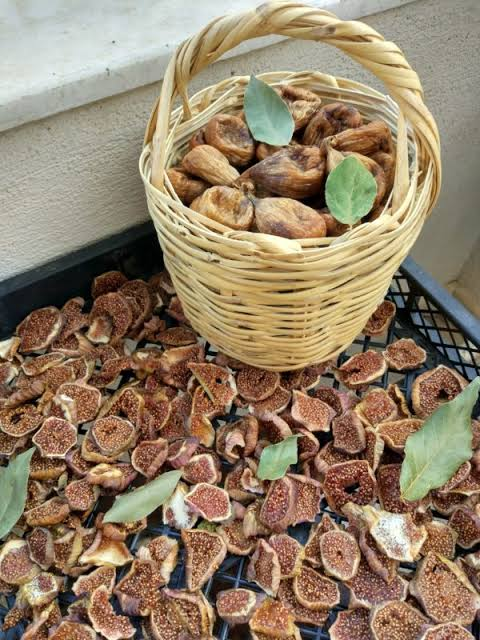
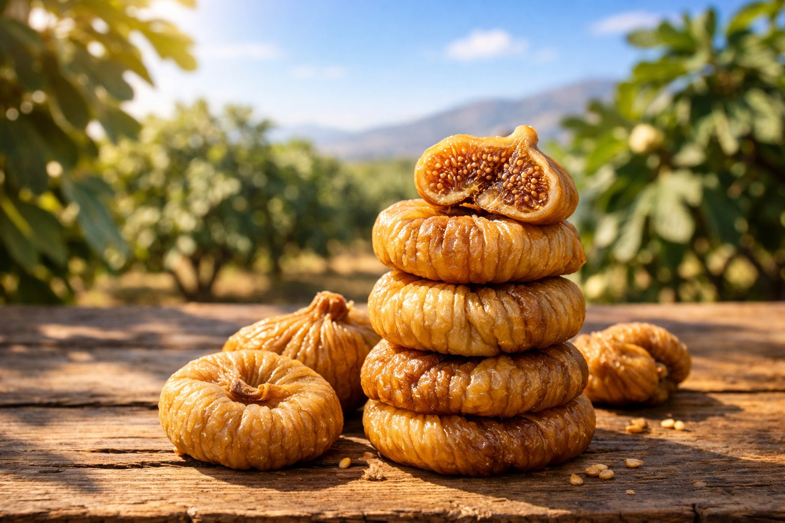

Bestseller
Dried Fig
Whole natural Lerida and Protoben figs, sun-dried on wooden trays and graded by hand into six calibres.
View specifications →Aegean Sun selects, dries and packs figs and apricots at the source — so every carton you open tastes the way the grower intended. Retail packs, food-service bulk and private label, shipped to 24 countries.

Everything we sell comes from two growing regions we know by name — the fig gardens of Aydin and the apricot terraces of Malatya.

Whole natural Lerida and Protoben figs, sun-dried on wooden trays and graded by hand into six calibres.
View specifications →
Pressed fig paste rolled with walnut halves into a firm log, sliced like charcuterie. No added sugar, no binders.
View specifications →
Malatya apricot halves in both sulphured golden and natural dark grades, from jumbo to industrial calibres.
View specifications →
Most exporters buy at auction. We contract the same 140 growing families year after year, walk the gardens before harvest, and dry the fruit in our own facility 20 minutes from the orchards.
Fruit is left to ripen and fall naturally, then collected daily between August and September.
Five to seven days on open trays, turned by hand, finished in controlled dryers to a stable moisture level.
Metal detection, optical sorting, hand grading and lab testing before a lot is released.
Your format, your label, palletised and loaded — typically within 10 working days of order.
No added sugar, no glucose syrup, no preservatives in our natural grades. Fruit and sunshine, that is the recipe.
BRCGS, ISO 22000 and organic certification, with full documentation supplied per shipment.
FCL, LCL and air freight from Izmir. EXW, FOB, CIF and DDP terms on request.
“We switched three seasons ago and have not had a single rejected lot since. The grading is exactly what the spec sheet promises.”Purchasing manager, organic retail chain — Germany
“The fig salami sells out every winter. It is the only product in our gift range that customers ask for by name.”Owner, specialty food importer — United Kingdom
Dried fruit is an agricultural product before it is a grocery product. Which valley it grew in decides more about how it tastes than anything we do afterwards.
The stretch of the Aegean interior around Nazilli and Incirliova is where the Sarılop fig became the reference for dried figs worldwide. Hot dry summers, cool nights and calcareous soil let the fruit ripen on the tree until the sugars concentrate on their own.
All of our figs — whole grades and fig salami alike — come from contracted gardens within an hour of our facility.
Roughly four out of five dried apricots eaten anywhere in the world come from the terraces above the Euphrates around Malatya. Altitude and a short, intense season give the Hacıhaliloglu apricot its density and its keeping quality.
We buy there directly, dry to the sulphur level each market allows, and ship both golden and natural grades.
Send us your product, volume and destination, and we will come back with a price, a lead time and a sample.
Incirliova OSB, Aydin, Türkiye
Orchard and facility visits welcome.
Request a free sample box of all three products — we cover the shipping.